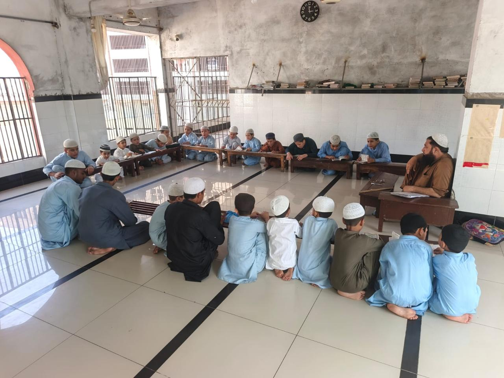
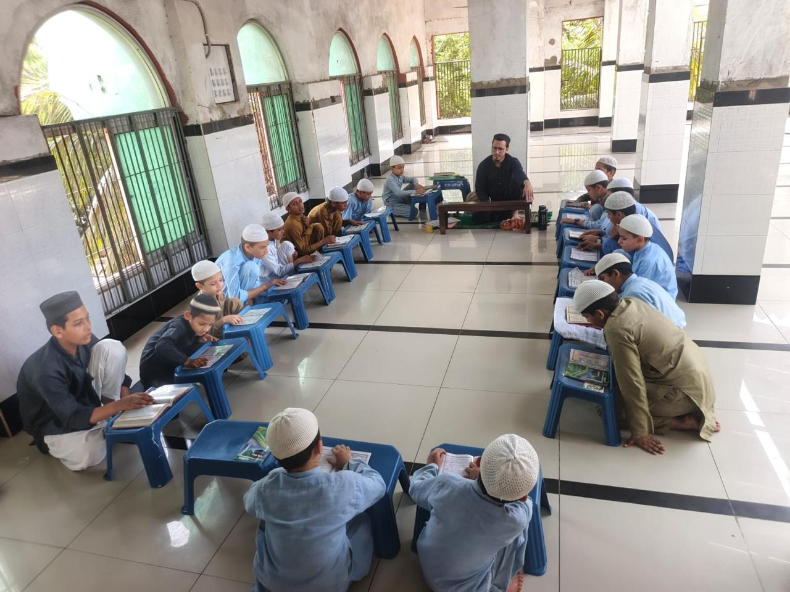
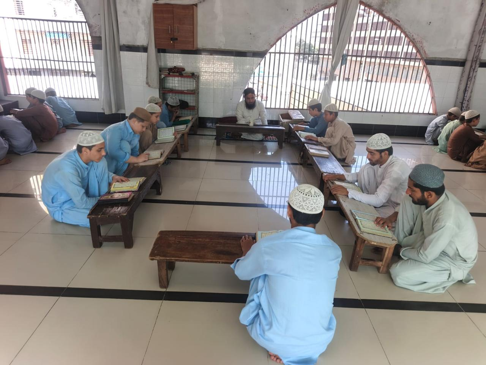
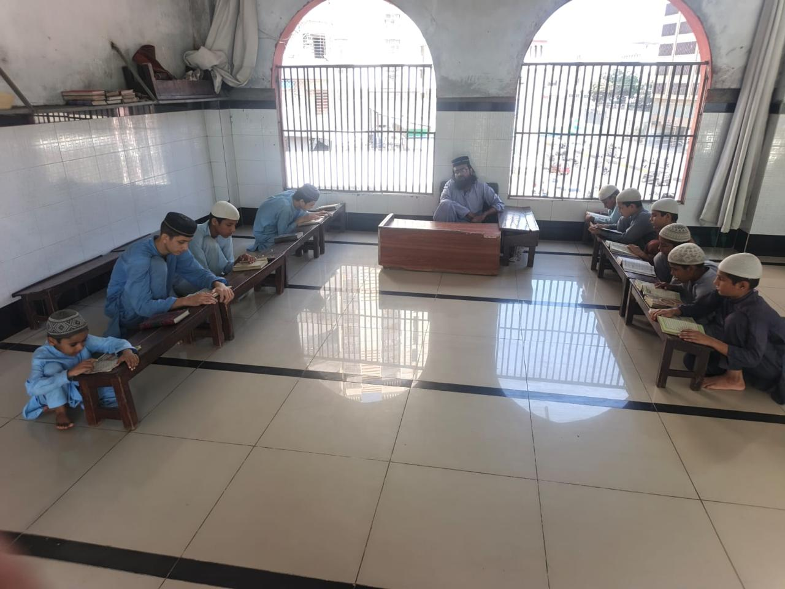
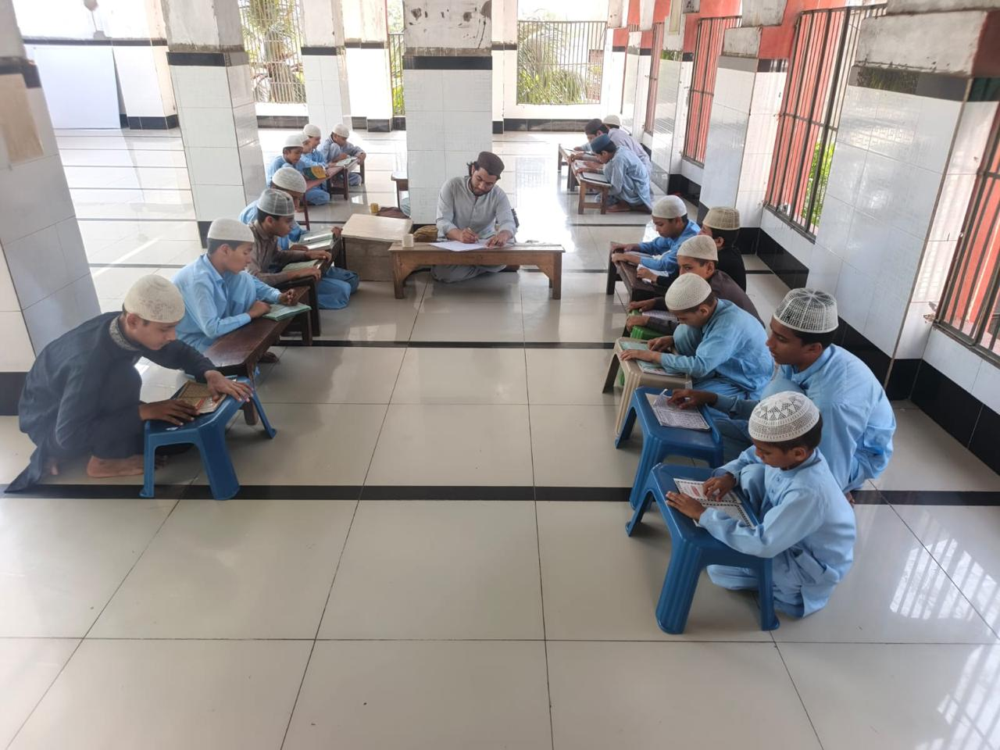

The Three Pillars of Our Academic Approach
Our instructional framework balances intensive Quranic memorization with phonological accuracy, spiritual reflection, and moral refinement.
1. Hifz al-Quran (Memorization)
Students commit all 30 Juz (Ajza) of the Holy Quran to memory under the systematic three-tier method:
- Sabaq: Daily new lesson presented to the Ustadh.
- Sabqi: Revision of recently memorized chapters.
- Manzil: Cumulative revision of earlier Juz to guarantee lifetime retention.
2. Tajweed & Nazira
Before and alongside memorization, students develop impeccable Quranic phonetics:
- Makharaj: Precise vocal articulation points for every Arabic letter.
- Sifat: Nuanced acoustic characteristics (whisper, elevation, lightness).
- Fluency: Measured rhythmic chanting adhering to classical rules.
3. Tarbiyah & Residential Care
Character development is embedded into every facet of student life:
- Daily Adab: Politeness, respect, humility, and mutual fraternity.
- Full Sustenance: Three balanced meals daily and tea breaks.
- Healthcare: On-call physician visits and medicine for boarding students.
A Day in the Life of a Madrasa Scholar
Discipline, punctuality, and prayer shape every hour of our students’ residential routine.
Fajr & Sabaq Recitation
Communal dawn prayer followed by the prime recitation period when the mind is freshest for committing new Quranic verses.
Breakfast & Sabqi Revision
Nutritional breakfast and traditional morning tea break, followed by concentrated revision of previous lessons with fellow students.
Zuhr, Lunch & Qaylulah
Congregational Zuhr prayer, hot midday meal, and the prophetic Sunnah midday rest (Qaylulah) to refresh mental stamina.
Asr, Manzil & Evening Rest
Afternoon prayer, comprehensive cumulative review (Manzil), Maghrib, communal dinner, Isha prayers, and disciplined rest.
Inside Our Classrooms and Study Circles
Every image below represents actual students and instructors at Mahd al-Irshad al-Islami in Karachi. Click any photograph to view in high definition.





Authentic Madrasa Fellowship
This original recording shows students gathered inside Jamia Masjid Muhajir Makki, reading their lessons and being served refreshing tea during their daily academic pause.
The atmosphere reflects brotherhood, mutual respect, and dedicated study. For our 80 boarding students, the madrasa is a true home where their spiritual, intellectual, and physical needs are looked after with paternal care.
Sponsor a Student's Sustenance